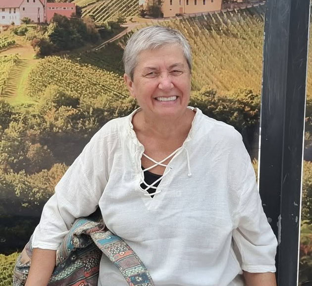

Üdvözöllek az oldalon! A könyvek mindig fontos szerepet játszottak az életemben — inspirálnak, tanítanak, és segítenek kikapcsolódni. Ez az oldal azért készült, hogy megosszam a kedvenceimet, és könnyebbé tegyem mások számára is a keresést és a felfedezést. Remélem, találsz itt olyan érdekes könyveket, amelyek neked is adnak valamit.